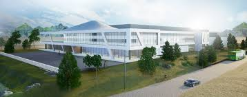

Project Summary
Our team is developing and testing critical components for one of the world’s most powerful laser systems (2 Petawatt) at CSU’s new $150M ATLAS Facility which is set to open in 2026. ATLAS will conduct laser driven nuclear fusion research for developing clean energy.
Background, Constraints, and Goals
Describe project background, constraints, and goals here.
The CSU ATLAS facility is apart of the 40 year partnership between the Department of Energy’s Fusion Energy Sciences Program and European industry leader Marvel Fusion. This program is driven by university professors Jorge Rocca and Carmen Menoni. The ATLAS researchers will investigate laser fusion along with medical applications for localized tumor treatment. The student led senior design projects will allow for seamless and faster integration of testing equipment in the ATLAS building.
Project Info
- Faculty Advisors: Dr. Reed Hollinger, Dr. Jorge Rocca, Dr. Brendan Reagan
- Collaboration: CSU ATLAS and Engineering Research Center (ERC)
- Meeting Time: Monday through Friday 8am-5pm
- Venue: CSU ERC at the Foothills Campus